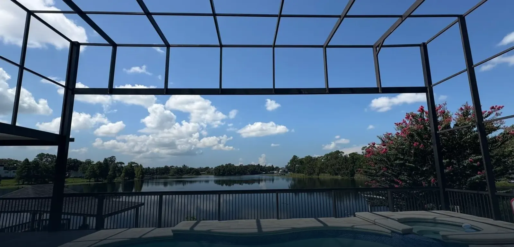
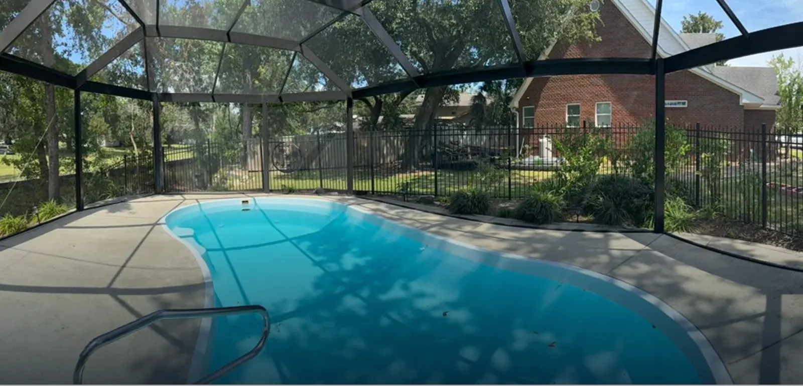

Cerramientos para piscinas y espacios exteriores en Orlando
Cerramientos con malla para piscinas y patios, pavers, pérgolas, lanais y cocinas exteriores, hechos a la medida para casas en Orlando y la Florida Central.
- Presupuestos gratis
- 30% de pago inicial, resto en hasta 4 cuotas
- Orlando y la Florida Central
Pida su presupuesto gratis
Toma cerca de un minuto. Captain B se comunicará con usted sobre su proyecto.
Nuestros servicios
Elija un proyecto o combine varios en un solo plan para su patio.

Cerramientos para piscinas y patios
Cerramientos a la medida que hacen su piscina y su patio más protegidos, cómodos y fáciles de usar.
Ver más
Instalación de pavers
Pavers para decks de piscina, patios y caminos con un acabado limpio.
Ver más
Lanais a la medida
Lanais que combinan con su casa y le dan más espacio para vivir al aire libre.
Ver más
Cocinas exteriores
Cocinas exteriores a la medida que hacen del patio el lugar para cocinar y recibir.
Ver másPérgolas y estructuras exteriores
Sombra y nuevos espacios para reunirse, hechos a la medida de su patio.
Ver másCésped artificial
Un césped limpio y verde que se mantiene así todo el año.
Ver másCascadas y fuentes
Cascadas y fuentes que le dan un punto focal a su patio.
Ver másRemodelación de exteriores
Convierta un patio o área de piscina anticuada en un espacio que use todos los días.
Ver más


Por qué los clientes eligen a Captain B
Por más de una década, Captain B ha transformado patios de la Florida Central en espacios que las familias realmente disfrutan.
Hecho para su casa
Cada proyecto se planea para su espacio, el estilo de su casa y su forma de vivir.
Más de una década de experiencia
Desde estructuras individuales hasta proyectos exteriores completos.
Pago flexible
Empiece con 30% de pago inicial y pague el resto en hasta 4 cuotas.
Un plan para todo el patio
Combine cerramiento, pavers, césped artificial o cocina en un solo proyecto.
Cómo funciona
Desde la primera llamada hasta su espacio exterior terminado, en cuatro pasos claros.
Cuéntenos
Llene el formulario corto o llame, y cuéntenos qué quiere construir.
Revisamos su espacio
Analizamos su propiedad y sus objetivos para encontrar las mejores opciones.
Lo planeamos
Planeamos la solución adecuada y la revisamos con usted.
Lo construimos
Su proyecto se construye con atención al detalle y un fuerte compromiso con la calidad.
Proyectos recientes
Fotos de obras de Captain B en la Florida Central.
Empiece con 30% de pago inicial
Pague el resto en hasta 4 cuotas. Sin tarjeta de crédito.
Pida un presupuesto gratisPreguntas frecuentes
Respuestas rápidas sobre Captain B y cómo funciona un proyecto.
Llame o envíe un mensaje por WhatsApp. El presupuesto es gratis.
¿Qué tipos de proyectos hace Captain B?
Cerramientos con malla para piscinas y patios, lanais a la medida, pérgolas y estructuras exteriores, instalación de pavers, césped artificial, cocinas exteriores a la medida, cascadas y fuentes decorativas, y remodelaciones de espacios exteriores, para casas y propiedades comerciales.
¿Trabajan fuera de Orlando?
Sí. Captain B sirve a Orlando y las áreas cercanas de la Florida Central. Escriba su código postal en el formulario y el equipo le confirma su zona.
¿Mi proyecto se puede personalizar?
Sí. Cada propiedad tiene medidas, necesidades y objetivos distintos, así que cada proyecto se planea para su espacio y lo que usted quiere.
¿Puedo combinar varios servicios en un proyecto?
Sí. Cerramientos, pavers, pérgolas, cocinas exteriores, césped y otros elementos se pueden planear juntos en un solo proyecto.
¿Hacen proyectos comerciales?
Sí. Captain B trabaja en proyectos residenciales y comerciales.
¿Cómo funcionan los pagos?
Puede empezar con 30% de pago inicial. El resto se puede pagar en hasta 4 cuotas, sin tarjeta de crédito.
¿Listo para planear su espacio exterior?
Cuéntenos sobre su patio y reciba un presupuesto gratis.